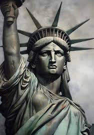

Paris, France

Paris, the city of love, is known for its stunning landmarks like the Eiffel Tower, the Louvre Museum, and its romantic ambiance. It's a hub of culture, art, and fine cuisine.
Tokyo, Japan

Tokyo is a bustling metropolis where traditional culture meets futuristic innovation. Visit the Tokyo Tower, experience the cherry blossoms, and explore its rich history.
New York, USA
Known as the city that never sleeps, New York is famous for the Statue of Liberty, Times Square, Central Park, and its dynamic energy that inspires millions.